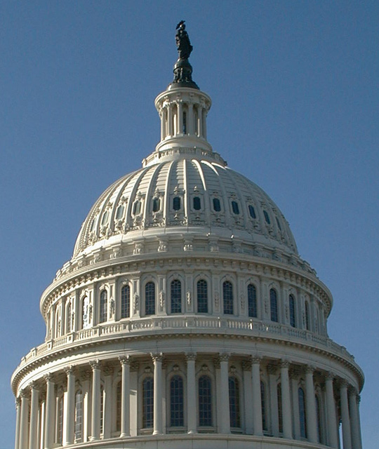
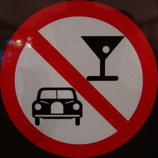
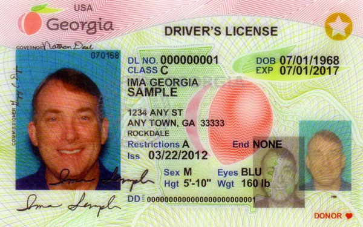

Federalism
Dr. Christopher N. Lawrence
Middle Georgia State University
POLS 1101: American Government
🔊 Disable Narration
Sovereignty
Systems of government are defined in terms of sovereignty:
Fundamental governmental authority.
The right to govern a particular people or territory.
Unitary States
In a unitary state (or system) only the national government is sovereign.
Country may be divided into provinces, counties, etc. but they are only administrative subdivisions.
Examples include:
France
Israel
Japan
New Zealand
Confederations
A confederation (or confederal system) is a government formed by sovereign states working together for common purposes.
Central government's powers are limited to those granted by the states.
Examples include:
U.S. under the Articles of Confederation.
Switzerland (until 1848).
The European Union (to an extent…)
Federal States
A federal state (or federation) shares sovereignty between the national and subnational governments.
The nation and its units (states, provinces, etc.) may have both overlapping and non-overlapping areas of responsibility.
Examples include:
- The United States (since 1789)
- Brazil
- Canada
- Germany
Federalism in the United States
Many national powers (sometimes called delegated powers), including some of the enumerated powers of Congress.
Concurrent powers are shared between the state and federal governments.
Reserved powers are powers executed by the states alone; however, other powers are denied to the states.
National (Delegated) Powers
Powers that can be exercised solely by the national government:
-

Conduct foreign relations, including issuing declarations of war.
Coin money and issue paper currency.
Regulate interstate commerce.
Regulate foreign commerce, including imposing tariffs and trade sanctions.
Provide for national defense.
Concurrent (Shared) Powers
Powers that can be exercised by both state and national governments:
Levy taxes; spend and borrow money.
Establish courts.
Charter corporations and banks.
Make and enforce laws.
Eminent domain: take private property for public use, subject to compensation.
Reserved Powers of the States
Powers that only the states may exercise:
Regulate time, place, and manner of elections.
Regulate intrastate commerce (commerce within the state).
Organize political subdivisions like counties, cities, and school districts.
Exercise police power over public health, safety, welfare, and morality.
Ratify amendments to the U.S. Constitution.
Major Limitations on State Power
States may not…
issue currency, coin money, or declare anything other than gold or silver legal tender.
levy tariffs on imports or exports without Congress' approval.
enter into treaties or alliances with other countries.
enter into agreements with other states (known as interstate compacts) without Congress' consent.
pass bills of attainder, ex post facto laws, or abridge contracts.
Obligations of the States
States also have certain obligations to the other states, subject to exceptions:
Must give full faith and credit to the public acts of other states, such as court decisions and legal contracts. (However, note the public policy exception.)
Must respect the equal privileges and immunities of citizens of other states; cannot discriminate against non-residents.
Extradition of those suspected or convicted of crimes back to the state where they are wanted.
Federalism and the Courts
Supreme Court decided it had authority to mediate issues of dual sovereignty in McCulloch v. Maryland (1819):
Necessary and Proper Clause (or Elastic Clause): gives Congress authority to “make all laws which shall be necessary and proper to carrying into execution” the enumerated powers: additional powers known as implied powers.
Supremacy Clause: federal constitution and laws “supreme law of the land.”
Combined effect: Congress could go well beyond its enumerated powers, and states had to defer to expansion of federal power.
The Commerce Power
Congress can “regulate commerce… among the several states.”
Applied to state efforts to control trade between states in Gibbons v. Ogden (1824).
During the New Deal era, Supreme Court allowed Congress to regulate almost any action that might affect the national economy: NLRB v. Jones & Laughlin Steel (1937); Wickard v. Filburn (1942).
More recent example: medical marijuana case (Gonzales v. Raich, 2005).
The Spending Power
Congress has the power to spend money providing for the “general welfare.”
When Congress gives money to states and local governments, it often requires states to do things in return.
-

Examples:
Raising the drinking age to 21 (South Dakota v. Dole, 1987)
Seatbelt laws
Motorcycle helmet laws
Limits on Federal Power?
The Supreme Court has occasionally said the federal government has gone too far:
In the 1990s, the Supreme Court struck down parts of several laws on federalism grounds.
In 2012, the Court somewhat limited the spending power in National Federation of Independent Business v. Sebelius (PPACA case): states could not lose all federal funds for existing Medicaid recipients if they refused to expand the program.
State Power and Nullification
Two constitutional amendments designed to protect state governments' authority:
Tenth Amendment (states and the people retain powers not delegated to the federal government).
Eleventh Amendment (sovereign immunity).
After McCulloch, some states argued in favor of the nullification doctrine: that states could refuse to follow federal laws they believed were unconstitutional.
Reflects older compact theory of federal–state relations.
Dual and Cooperative Federalism
Traditionally, relationship between state and national governments was understood as dual federalism: each government did its own thing, with little overlap in responsibilities.
The expansion of national government power during FDR's presidency produced a new arrangement: cooperative federalism (sometimes called marble cake federalism).
Rather than two separate “spheres” of power—the dual federalism model—powers of the state and national governments overlap. Reflects the nationalist theory of federal-state relations.
Cooperative Federalism in Practice
Political scientists who defined the term believed there would be genuine cooperation between state and national governments to design effective programs.
Instead, however, many of the new national programs gave states major administrative responsibilities but little input.
Using the Spending Power
Congress has several options for getting the states to do things it is unable or unwilling for the federal government to do:
Categorical grant programs.
Block grant programs.
Using unfunded mandates.
Categorical Grants
Federal grants to a state or local government that include specific rules and regulations for the use of funds.
Examples:
SNAP (“Food Stamps”).
Head Start.
Medicaid.
No Child Left Behind.
Devolution and Block Grants
States and some national politicians (former governors like Nixon, Carter, and Reagan) pushed for returning more powers to the states: devolution.
Block grants: federal grants with fewer “strings” attached.
Examples:
“Community Development Block Grants”
Temporary Assistance to Needy Families (TANF).
Unfunded Mandates
Congress requires states to do things without providing the needed funding.
No Child Left Behind: required states to increase testing of students, but didn't pay to develop the needed tests.
-

REAL ID Act: required states to make driver's licenses/state IDs more secure, but states had to spend millions changing issuing processes.
Is Devolution Dead?
Although states are “laboratories of democracy,” and national politicians often use rhetoric supporting devolution, they remain reluctant to give up control.
Politicians often are responding to public demands to “do something” about problems, even when state and local governments may be better equipped to solve them.
Copyright and License
The text and narration of these slides are an original, creative work, Copyright © 2000–15 Christopher N. Lawrence. You may freely use, modify, and redistribute this slideshow under the terms of the Creative Commons Attribution-Share Alike 4.0 International license. To view a copy of this license, visit http://creativecommons.org/licenses/by-sa/4.0/ or send a letter to Creative Commons, 444 Castro Street, Suite 900, Mountain View, California, 94041, USA.
Other elements of these slides are either in the public domain (either originally or due to lapse in copyright), are U.S. government works not subject to copyright, or were licensed under the Creative Commons Attribution-Share Alike license (or a less restrictive license, the Creative Commons Attribution license) by their original creator.
Works Consulted
The following sources were consulted or used in the production of one or more of these slideshows, in addition to various primary source materials generally cited in-place or otherwise obvious from context throughout; previous editions of these works may have also been used. Any errors or omissions remain the sole responsibility of the author.
- Barbour, Christine and Gerald C. Wright. 2012. Keeping the Republic: Power and Citizenship in American Politics, Brief 4th Edition. Washington: CQ Press.
- Coleman, John J., Kenneth M. Goldstein, and William G. Howell. 2012. Cause and Consequence in American Politics. New York: Longman Pearson.
- Fiorina, Morris P., Paul E. Peterson, Bertram D. Johnson, and William G. Mayer. 2011. America's New Democracy, 6th Edition. New York: Longman Pearson.
- O'Connor, Karen, Larry J. Sabato, and Alixandra B. Yanus. 2013. American Government: Roots and Reform, 12th Edition. New York: Pearson.
- Sidlow, Edward I. and Beth Henschen. 2013. GOVT, 4th Edition. New York: Cengage Learning.
- The American National Election Studies.
- Various Wikimedia projects, including the Wikimedia Commons, Wikipedia, and Wikisource.